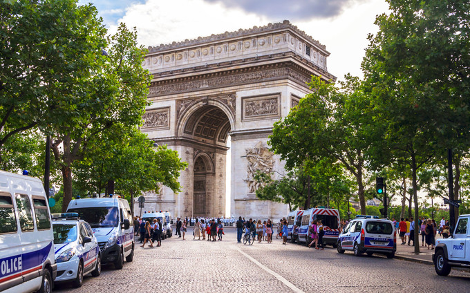
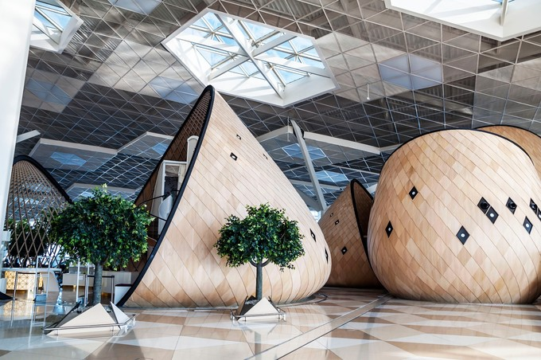
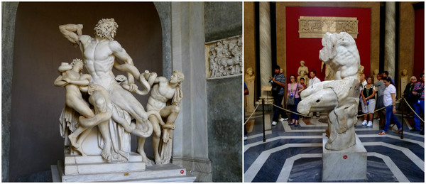
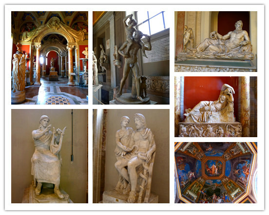
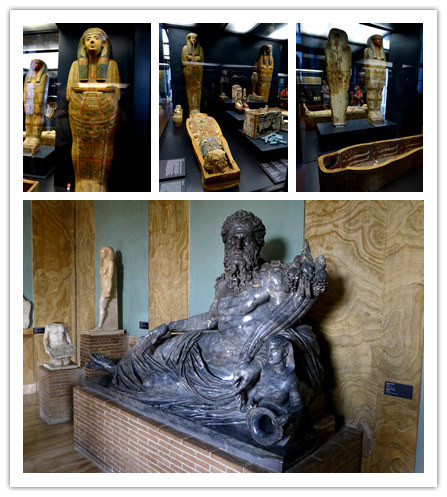
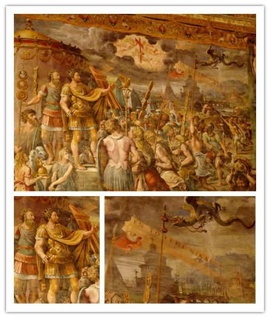
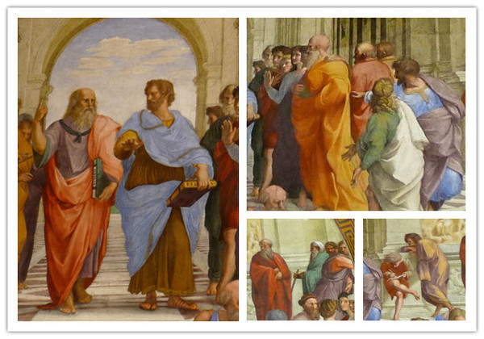
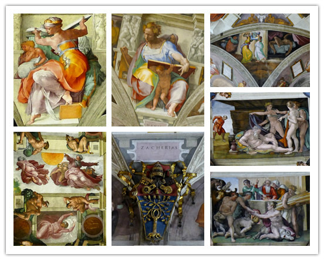

欧洲行的几张照片
 惊艳与震撼的欧洲行----意大利与梵蒂冈
自由行攻略 2016-11-28
阅读 41177
独一之旅 屈阳:
我是资深旅行定制师，深度游过30多个国家，已为超过200对客户提供定制服务，也希望有机会为您定制...
等3050人咨询过TA


收藏
点赞
分享
早在圣彼得教堂顶就看到了这个土黄色长方形的巴洛克宫殿，有3层，现在这个宫殿的中央草坪同样可以看到教堂的圆顶。花园里还有一个金色的破碎的地球，可以用手推动。
松果庭院里放置着巨大青铜松果和孔雀雕塑，还有从尼罗河搬来的巨型雕塑，如果我没记错的话。
Muse展室里的雕塑《残躯》是公元前1世纪希腊原作，虽已残缺不全，但仍能看出雕塑具有的完美肌肉，男子扭过身体向左后方看去，每一块肌肉都配合着动作进行伸展，这是米开朗基罗深爱的雕塑，也在他的雕塑和绘画作品中充分表现出来，肌肉发达、线条明朗。
 然后是埃及展厅，有一些绘制精美的法老和女王的棺,古罗马时期的雕塑，以塑造健美的肌肉为核心，衣服褶皱雕刻得非常精细，诸神们。
《十字架显圣》：表现的是公元312年10月28日，君士坦丁大帝在罗马附近的米尔维安大桥战役中战胜强敌的故事。据说当时天空中出现一道十字架形状的火焰和一句拉丁文“你将克敌制胜”，因为神迹的出现，他皈依了基督教，基督教从此摆脱了受压迫的命运，拥有了合法地位。
站在中间的柏拉图（以达芬奇的画像为蓝本）手指天空，表示一切均源于神灵的启示；亚里士多德手掌向下，好像在说明：现实世界才是他的研究课题。这两个对立的手势，表达了他们思想上的原则分歧。
 评论:
热门 /最新 提问Shaker
在国内旅游、出境旅游市场已全部
实现了计算机联网操作。网络具备
了专业的旅游产品销售体系，在同
行业中更具市场领先优势。
联系我们
微企点网址 : http://www.zhouxq.me
QQ交流群：2921188500
支持邮箱：18928498593@163.com
新浪微博：纪宁希